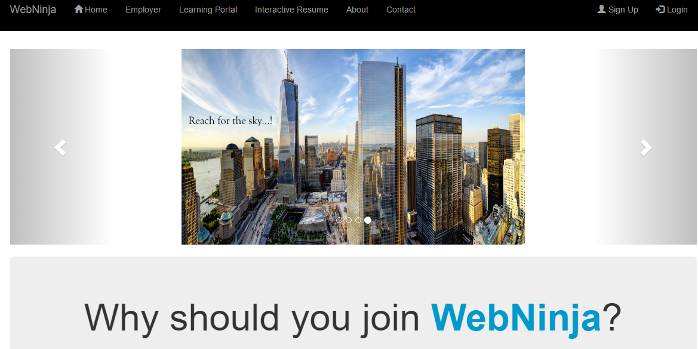

Hello, my name is Dung Nguyen and I'm currently a student at San Jose State University and will be graduating in Spring 2017. I am working on getting a Bachelors Degree in Computer Science. I have some previous knowledge in Graphic Design/Web Design courses. I was a previous art student but decided that I have a passion for both programming and designing. With my skills in both the technical side of coding and my artistic abilities, I would be a valuable asset to your team. Being a previous art student, I have much knowledge of core design and have a creative mindset. I feel it would be useful to have both programming and designing skills when creating a functional website. In both my web courses, I was able to create functional websites. One was purely coded using HTML, Javascript, and CSS, while the other website was created using Adobe Dreamweaver. I am more comfortable creating websites from scratch. I'm always willing to learn new tools to help me pursue in my career in Web Development.
Project for IoT workshop for Aeris. In two weeks, we have to make a use case to create something that can benefit our daily lives. We were given a tessel and module that can transmit data using Wifi and store that data in the Cloud network. Our team decided to create a webapp to help farmers produce better crops. I made the overall project with a guidance from a graduate student. I learned how to use JSON data and display that data using Chart.js.
This was my first website I created not using Adobe Dreamweaver. Our class learned how to use HTML, CSS, PHP, Javascript, and AJAX. Our first demo project didn't look so great because we used basic HTML and CSS code. For our final project, we decided to scratch our first idea and use Bootstrap to make it look simplistic. Since we only had one week to finish our overall project, I decided to take a weekend to learn how to use Bootstrap and implement in our project. It was successful, and our project looked a lot better. I did most of the front end portion of the project.
We had to create a project using Ruby on Rails framework. I did the front end of project because we had to learn how to use the framework in such a small amount of time. Made sure to manage the workload and scheduling in our group. I considered a team lead because I made sure that we communicate and meet with one another.
Created a movie reservation using Java and java database called JDBC. We used console base programming to get our program to work. I created the overall initial commands and added all the sql queries for our database. I also had to make sure to check the errors in our project.
Team made a visual novel game based on japanese light novel games. Our game consisted of a warrior dog and a thief cat that are forced to go on an adventure together. My responsibility was to make the artwork which includes the characters and some of the pencil work for the prologue. I used Adobe Photoshop and my wacom tablet to create the artwork.
Here are some examples of my work. Please visit my porfolium. It has some of my previous graphic works.